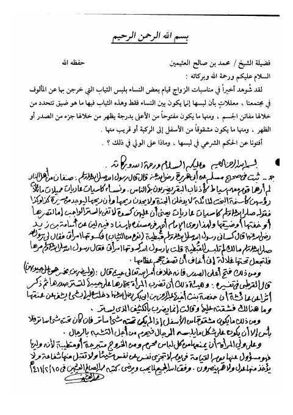

- Published
- 1411هـ 1991م
- Country
- الرياض، السعودية
- Edition
- 1
- Volumes
- 1
- Pages
- 1
- Type
- كتاب
- Category
- المرأة والمجتمع
- Subcategory
- أحوال شخصية
Description
▫️ العنوان: فتوى في لباس المرأة ▪️ المؤلف: #محمد_بن_صالح_العثيمين ▫️ تاريخ النشر: 1411هـ 1991م ▪️ بلد النشر: الرياض، #السعودية ▫️ الطبعة: 1 ▪️ عدد الأجزاء: 1 ▫️ الصفحات: 1 ▪️ نوع الوعاء: #كتاب ▫️ التصنيف الرئيسي: #المرأة_والمجتمع ▪️ التصنيف الفرعي: #أحوال_شخصية ۪